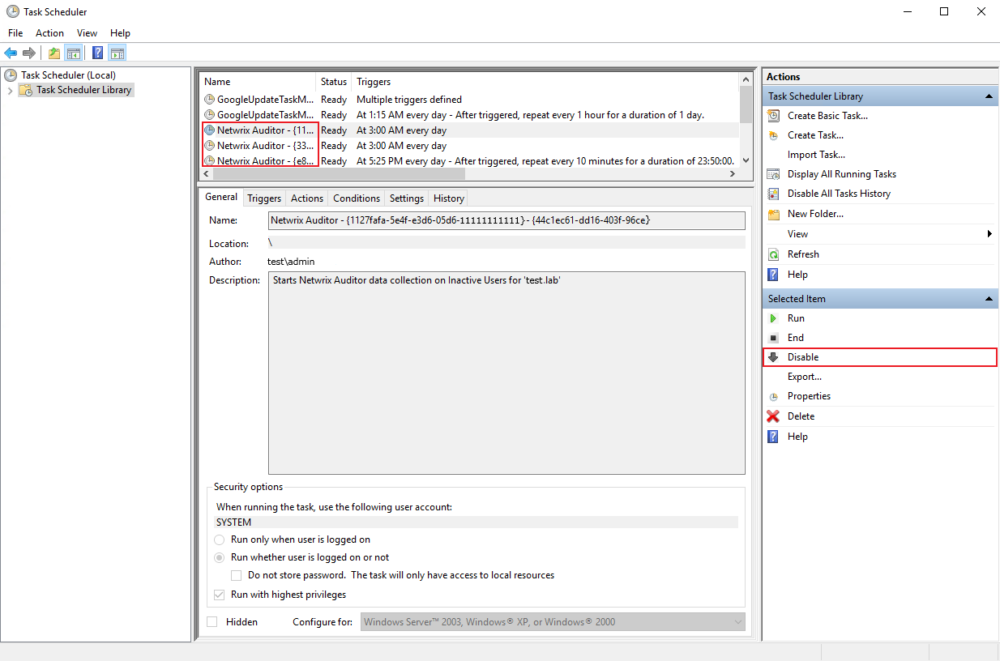

Question
Answer
NOTE: In case you've previously migrated your Netwrix Auditor Storages (Long-Term Archive and/or Short-Term Archive) manually or upgraded from Netwrix Auditor 8.0, contact Netwrix Technical Support for assistance.
-
Stop all services except Netwrix Auditor Configuration Service(NwCfgServerSvc) and
Netwrix Auditor Core Service(NwCoreSvc).
In case any monitoring plan for Password Expiration Notifier, Inactive User Tracker, or Event Log Manager have ever been set up, disable the scheduled tasks for these applications of your Netwrix Auditor instance. To disable them, navigate to Start > All Programs > Task Scheduler > Task Scheduler Library and locate the tasks named Netwrix Auditor with descriptions mentioning the Password Expiration Notifier, Inactive User Tracker, or Event Log Manager applications.
Select these tasks (if any) and click Disable in the right pane.
 -
Copy all files from the old Long-Term-Archive folder into the new Long-Term-Archive
folder except for the ActivityRecords folder.
TIP: While it is not recommended to store your Long-Term Archive on a system disk or in a remote location, it is still possible to set both options up. Refer to the following article for additional documentation on setting up remote Long-Term Archive: Auditor Settings – Long-Term Archive · v10.6.
-
Copy the very last day folder from your ActivityRecords folder.
Pay attention to the folder structure — in case the the very last day folder had theC:\ProgramData\Netwrix Auditor\Data\ActivityRecords\1970\01\01\0000path, it should be copied to%New_LTA_Path%\ActivityRecords\1970\01\01\0000. - Start Netwrix Auditor Management Service(NwManagementSvc). In main Netwrix Auditor menu, navigate to Settings > Long-Term Archive and specify the new path.
- Start other services and tasks you have previously disabled.
- Copy the rest of files from the old ActivityRecords folder to the new one. In case you're prompted to overwrite any files, do skip these files instead.